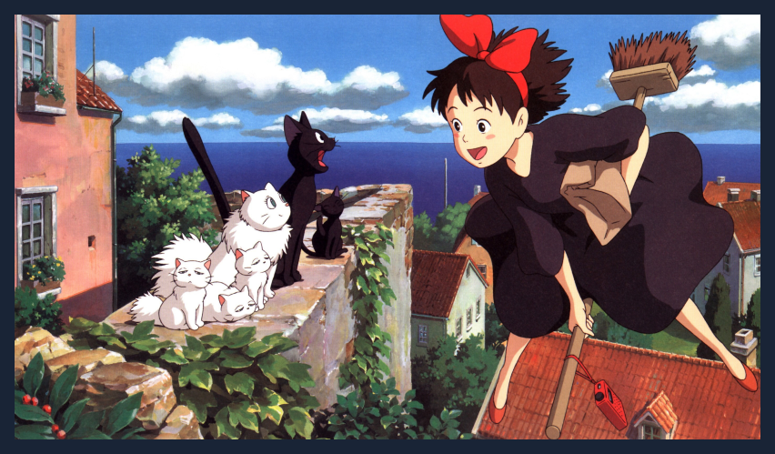
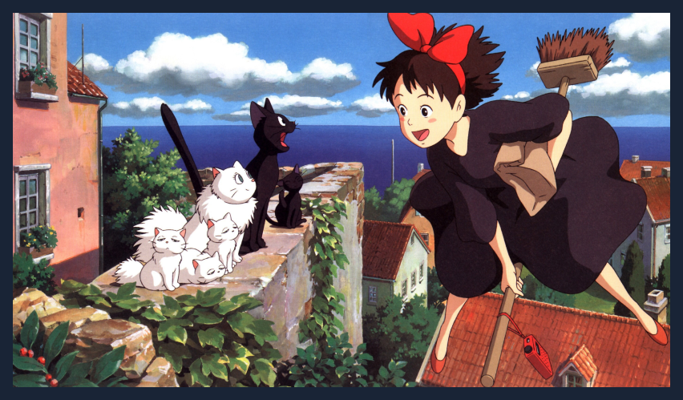

Sobre
Somos o primeiro e principal portal especializado em conteúdo sobre o Studio Ghibli no país. Atuando desde 2004 por meio de nosso site e redes sociais, nosso intuito principal é o de disseminar e facilitar o acesso à informação relacionadas às obras, diretores, equipe, notícias e produtos do renomado estúdio japonês de animação, o fazendo de forma criteriosa e profissional.
Nosso objetivo: o de informar com responsabilidade tudo o que envolve do Studio Ghibli e seus criadores: Hayao Miyazaki, Isao Takahata, Toshio Suzuki e equipe.
Nossa missão é de ampliar e aproximar o público do país do universo Ghibli, por meio da produção de conteúdo de qualidade. Por isso, apesar de sermos uma equipe pequena, somos engajados quando o assunto é Studio Ghibli.
Durante nossos 16 anos, já atuamos junto com diversas empresas, artistas e instituições, como: TeeNOW Brasil, Califórnia Filmes, Bandai Namco Brasil, Versátil Home Video, Japan House SP e o cineasta Chris Tex.
 
